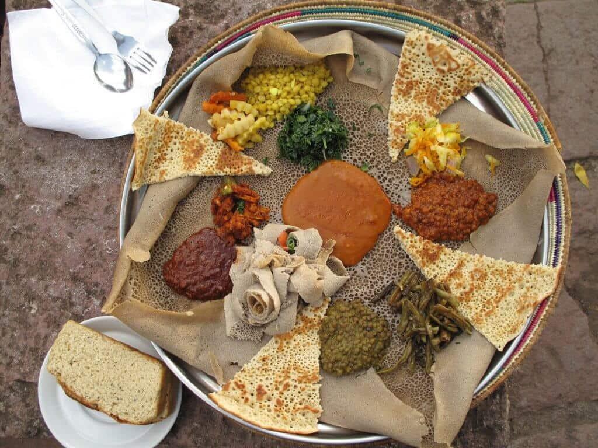

Injera

Description
Ethiopian bread similar to pan cake, made usually from teff. Injera is thin, prepared from teff flour, water and starter (a fluid collected from previously fermented mix) after successive fermentations
Ingredients
- 5 cups teff flour
- 2 cups dough starter
- 1½-2 cups warm water
- 4 to 6 cups water or as needed
Steps
- Combine one cup of teff flour with two cups of water. Mix well and store in a glass container or a non-reactive container with a tight-fitting lid. Leave to ferment for 3 to 4 days in a warm place.
- Discard the muddy water above the starter and stir well. It's ready to be used!
- Combine 2 cups of dough starter with 5 cups teff flour and add the 2 cups warm water gradually. You may end up using about 1½ (the consistency should be thick but smooth) Mix with a stand mixer on a medium speed for 5 minutes, or mix with your hands.
- Pour 5 to 6 cups of water over the dough or pour enough to covever it about half inch deepo. Don't mix. Cover it up and leave it to ferment for three days.
- Discard the old water and replace it with a new one. Leave to ferment again for another 3 days.
- Discard the water again. Add 2 cups water, then mix the batter very well.
- Prepare the absit by boiling 3 cups of water. Turn off the heat.
- Add 1-1/2 cup of the batter to the boiled water. Mix well to dissolve.